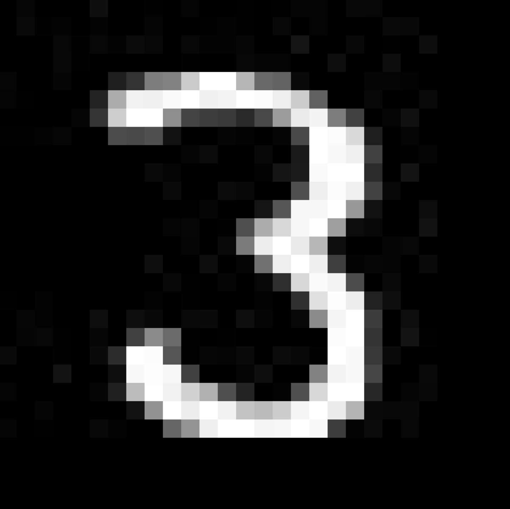
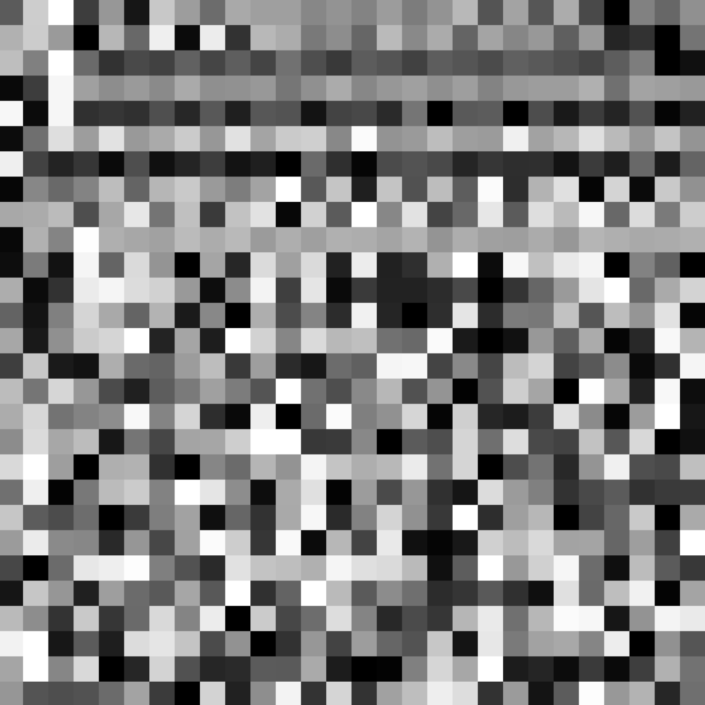
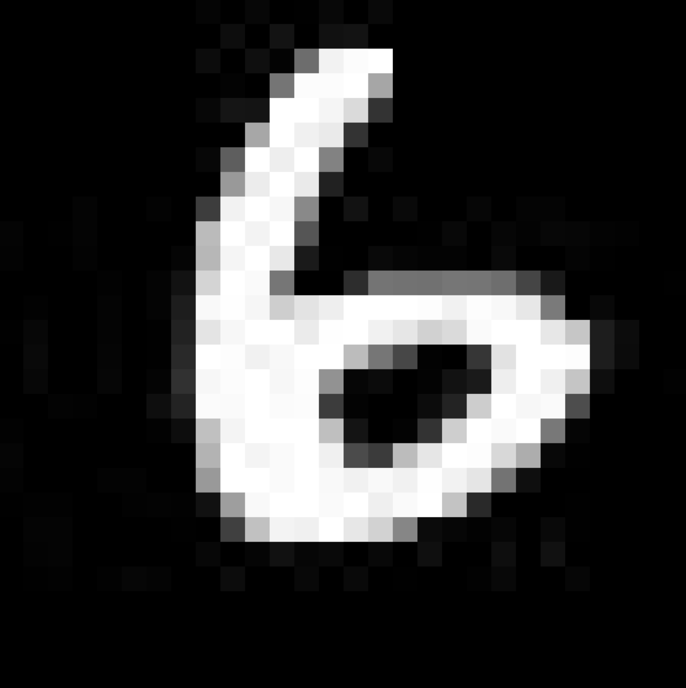
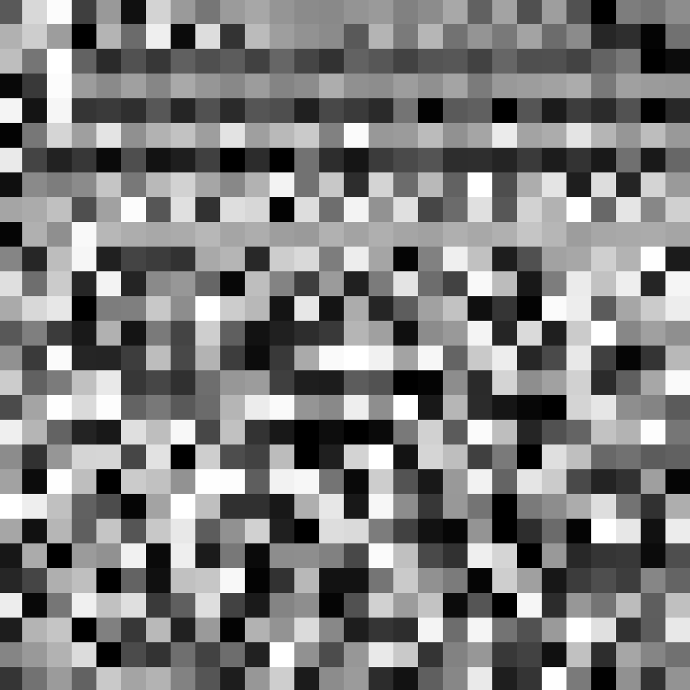
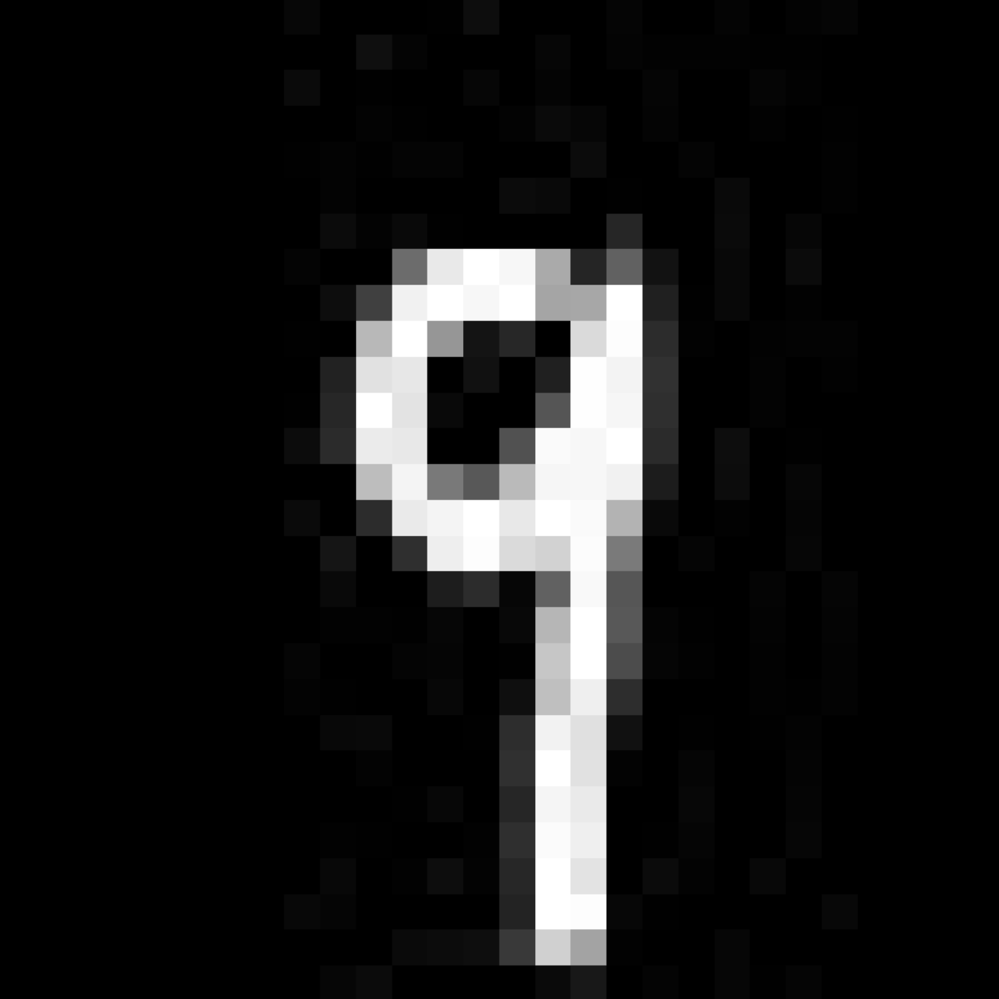
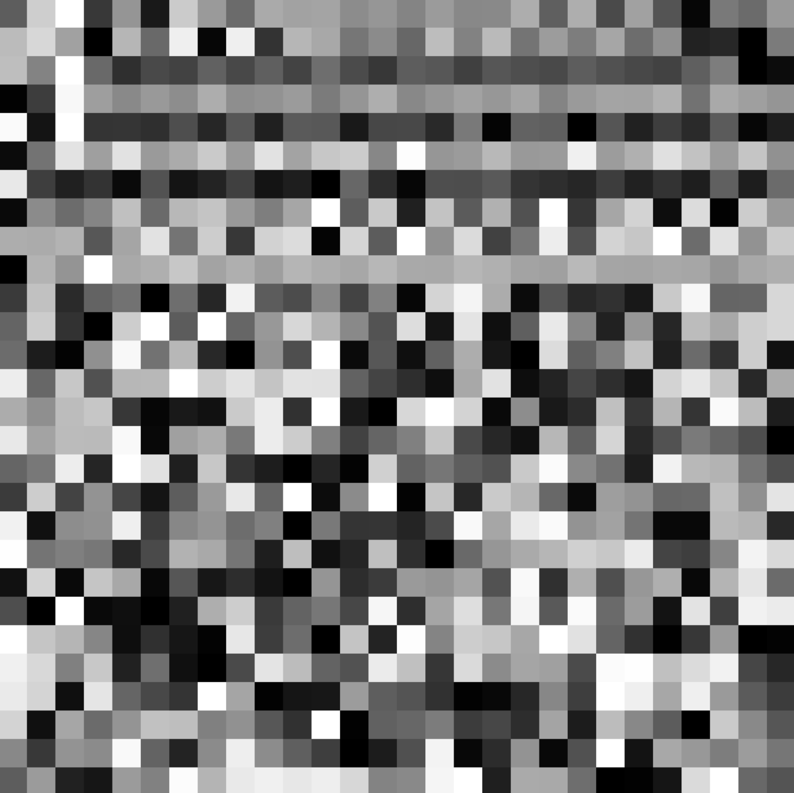

An intuitive way to understand information
<link rel="stylesheet" href="file:////Users/yaoxiang/.vscode/extensions/shd101wyy.markdown-preview-enhanced-0.7.9/crossnote/dependencies/katex/katex.min.css">
<style>
code[class*=language-],pre[class*=language-]{color:#333;background:0 0;font-family:Consolas,"Liberation Mono",Menlo,Courier,monospace;text-align:left;white-space:pre;word-spacing:normal;word-break:normal;word-wrap:normal;line-height:1.4;-moz-tab-size:8;-o-tab-size:8;tab-size:8;-webkit-hyphens:none;-moz-hyphens:none;-ms-hyphens:none;hyphens:none}pre[class*=language-]{padding:.8em;overflow:auto;border-radius:3px;background:#f5f5f5}:not(pre)>code[class*=language-]{padding:.1em;border-radius:.3em;white-space:normal;background:#f5f5f5}.token.blockquote,.token.comment{color:#969896}.token.cdata{color:#183691}.token.doctype,.token.macro.property,.token.punctuation,.token.variable{color:#333}.token.builtin,.token.important,.token.keyword,.token.operator,.token.rule{color:#a71d5d}.token.attr-value,.token.regex,.token.string,.token.url{color:#183691}.token.atrule,.token.boolean,.token.code,.token.command,.token.constant,.token.entity,.token.number,.token.property,.token.symbol{color:#0086b3}.token.prolog,.token.selector,.token.tag{color:#63a35c}.token.attr-name,.token.class,.token.class-name,.token.function,.token.id,.token.namespace,.token.pseudo-class,.token.pseudo-element,.token.url-reference .token.variable{color:#795da3}.token.entity{cursor:help}.token.title,.token.title .token.punctuation{font-weight:700;color:#1d3e81}.token.list{color:#ed6a43}.token.inserted{background-color:#eaffea;color:#55a532}.token.deleted{background-color:#ffecec;color:#bd2c00}.token.bold{font-weight:700}.token.italic{font-style:italic}.language-json .token.property{color:#183691}.language-markup .token.tag .token.punctuation{color:#333}.language-css .token.function,code.language-css{color:#0086b3}.language-yaml .token.atrule{color:#63a35c}code.language-yaml{color:#183691}.language-ruby .token.function{color:#333}.language-markdown .token.url{color:#795da3}.language-makefile .token.symbol{color:#795da3}.language-makefile .token.variable{color:#183691}.language-makefile .token.builtin{color:#0086b3}.language-bash .token.keyword{color:#0086b3}pre[data-line]{position:relative;padding:1em 0 1em 3em}pre[data-line] .line-highlight-wrapper{position:absolute;top:0;left:0;background-color:transparent;display:block;width:100%}pre[data-line] .line-highlight{position:absolute;left:0;right:0;padding:inherit 0;margin-top:1em;background:hsla(24,20%,50%,.08);background:linear-gradient(to right,hsla(24,20%,50%,.1) 70%,hsla(24,20%,50%,0));pointer-events:none;line-height:inherit;white-space:pre}pre[data-line] .line-highlight:before,pre[data-line] .line-highlight[data-end]:after{content:attr(data-start);position:absolute;top:.4em;left:.6em;min-width:1em;padding:0 .5em;background-color:hsla(24,20%,50%,.4);color:#f4f1ef;font:bold 65%/1.5 sans-serif;text-align:center;vertical-align:.3em;border-radius:999px;text-shadow:none;box-shadow:0 1px #fff}pre[data-line] .line-highlight[data-end]:after{content:attr(data-end);top:auto;bottom:.4em}html body{font-family:"Helvetica Neue",Helvetica,"Segoe UI",Arial,freesans,sans-serif;font-size:16px;line-height:1.6;color:#333;background-color:#fff;overflow:initial;box-sizing:border-box;word-wrap:break-word}html body>:first-child{margin-top:0}html body h1,html body h2,html body h3,html body h4,html body h5,html body h6{line-height:1.2;margin-top:1em;margin-bottom:16px;color:#000}html body h1{font-size:2.25em;font-weight:300;padding-bottom:.3em}html body h2{font-size:1.75em;font-weight:400;padding-bottom:.3em}html body h3{font-size:1.5em;font-weight:500}html body h4{font-size:1.25em;font-weight:600}html body h5{font-size:1.1em;font-weight:600}html body h6{font-size:1em;font-weight:600}html body h1,html body h2,html body h3,html body h4,html body h5{font-weight:600}html body h5{font-size:1em}html body h6{color:#5c5c5c}html body strong{color:#000}html body del{color:#5c5c5c}html body a:not([href]){color:inherit;text-decoration:none}html body a{color:#08c;text-decoration:none}html body a:hover{color:#00a3f5;text-decoration:none}html body img{max-width:100%}html body>p{margin-top:0;margin-bottom:16px;word-wrap:break-word}html body>ol,html body>ul{margin-bottom:16px}html body ol,html body ul{padding-left:2em}html body ol.no-list,html body ul.no-list{padding:0;list-style-type:none}html body ol ol,html body ol ul,html body ul ol,html body ul ul{margin-top:0;margin-bottom:0}html body li{margin-bottom:0}html body li.task-list-item{list-style:none}html body li>p{margin-top:0;margin-bottom:0}html body .task-list-item-checkbox{margin:0 .2em .25em -1.8em;vertical-align:middle}html body .task-list-item-checkbox:hover{cursor:pointer}html body blockquote{margin:16px 0;font-size:inherit;padding:0 15px;color:#5c5c5c;background-color:#f0f0f0;border-left:4px solid #d6d6d6}html body blockquote>:first-child{margin-top:0}html body blockquote>:last-child{margin-bottom:0}html body hr{height:4px;margin:32px 0;background-color:#d6d6d6;border:0 none}html body table{margin:10px 0 15px 0;border-collapse:collapse;border-spacing:0;display:block;width:100%;overflow:auto;word-break:normal;word-break:keep-all}html body table th{font-weight:700;color:#000}html body table td,html body table th{border:1px solid #d6d6d6;padding:6px 13px}html body dl{padding:0}html body dl dt{padding:0;margin-top:16px;font-size:1em;font-style:italic;font-weight:700}html body dl dd{padding:0 16px;margin-bottom:16px}html body code{font-family:Menlo,Monaco,Consolas,'Courier New',monospace;font-size:.85em!important;color:#000;background-color:#f0f0f0;border-radius:3px;padding:.2em 0}html body code::after,html body code::before{letter-spacing:-.2em;content:"\00a0"}html body pre>code{padding:0;margin:0;font-size:.85em!important;word-break:normal;white-space:pre;background:0 0;border:0}html body .highlight{margin-bottom:16px}html body .highlight pre,html body pre{padding:1em;overflow:auto;font-size:.85em!important;line-height:1.45;border:#d6d6d6;border-radius:3px}html body .highlight pre{margin-bottom:0;word-break:normal}html body pre code,html body pre tt{display:inline;max-width:initial;padding:0;margin:0;overflow:initial;line-height:inherit;word-wrap:normal;background-color:transparent;border:0}html body pre code:after,html body pre code:before,html body pre tt:after,html body pre tt:before{content:normal}html body blockquote,html body dl,html body ol,html body p,html body pre,html body ul{margin-top:0;margin-bottom:16px}html body kbd{color:#000;border:1px solid #d6d6d6;border-bottom:2px solid #c7c7c7;padding:2px 4px;background-color:#f0f0f0;border-radius:3px}@media print{html body{background-color:#fff}html body h1,html body h2,html body h3,html body h4,html body h5,html body h6{color:#000;page-break-after:avoid}html body blockquote{color:#5c5c5c}html body pre{page-break-inside:avoid}html body table{display:table}html body img{display:block;max-width:100%;max-height:100%}html body code,html body pre{word-wrap:break-word;white-space:pre}}.markdown-preview{width:100%;height:100%;box-sizing:border-box}.markdown-preview .newpage,.markdown-preview .pagebreak{page-break-before:always}.markdown-preview pre.line-numbers{position:relative;padding-left:3.8em;counter-reset:linenumber}.markdown-preview pre.line-numbers>code{position:relative}.markdown-preview pre.line-numbers .line-numbers-rows{position:absolute;pointer-events:none;top:1em;font-size:100%;left:0;width:3em;letter-spacing:-1px;border-right:1px solid #999;-webkit-user-select:none;-moz-user-select:none;-ms-user-select:none;user-select:none}.markdown-preview pre.line-numbers .line-numbers-rows>span{pointer-events:none;display:block;counter-increment:linenumber}.markdown-preview pre.line-numbers .line-numbers-rows>span:before{content:counter(linenumber);color:#999;display:block;padding-right:.8em;text-align:right}.markdown-preview .mathjax-exps .MathJax_Display{text-align:center!important}.markdown-preview:not([data-for=preview]) .code-chunk .btn-group{display:none}.markdown-preview:not([data-for=preview]) .code-chunk .status{display:none}.markdown-preview:not([data-for=preview]) .code-chunk .output-div{margin-bottom:16px}.markdown-preview .md-toc{padding:0}.markdown-preview .md-toc .md-toc-link-wrapper .md-toc-link{display:inline;padding:.25rem 0}.markdown-preview .md-toc .md-toc-link-wrapper .md-toc-link div,.markdown-preview .md-toc .md-toc-link-wrapper .md-toc-link p{display:inline}.markdown-preview .md-toc .md-toc-link-wrapper.highlighted .md-toc-link{font-weight:800}.scrollbar-style::-webkit-scrollbar{width:8px}.scrollbar-style::-webkit-scrollbar-track{border-radius:10px;background-color:transparent}.scrollbar-style::-webkit-scrollbar-thumb{border-radius:5px;background-color:rgba(150,150,150,.66);border:4px solid rgba(150,150,150,.66);background-clip:content-box}html body[for=html-export]:not([data-presentation-mode]){position:relative;width:100%;height:100%;top:0;left:0;margin:0;padding:0;overflow:auto}html body[for=html-export]:not([data-presentation-mode]) .markdown-preview{position:relative;top:0;min-height:100vh}@media screen and (min-width:914px){html body[for=html-export]:not([data-presentation-mode]) .markdown-preview{padding:2em calc(50% - 457px + 2em)}}@media screen and (max-width:914px){html body[for=html-export]:not([data-presentation-mode]) .markdown-preview{padding:2em}}@media screen and (max-width:450px){html body[for=html-export]:not([data-presentation-mode]) .markdown-preview{font-size:14px!important;padding:1em}}@media print{html body[for=html-export]:not([data-presentation-mode]) #sidebar-toc-btn{display:none}}html body[for=html-export]:not([data-presentation-mode]) #sidebar-toc-btn{position:fixed;bottom:8px;left:8px;font-size:28px;cursor:pointer;color:inherit;z-index:99;width:32px;text-align:center;opacity:.4}html body[for=html-export]:not([data-presentation-mode])[html-show-sidebar-toc] #sidebar-toc-btn{opacity:1}html body[for=html-export]:not([data-presentation-mode])[html-show-sidebar-toc] .md-sidebar-toc{position:fixed;top:0;left:0;width:300px;height:100%;padding:32px 0 48px 0;font-size:14px;box-shadow:0 0 4px rgba(150,150,150,.33);box-sizing:border-box;overflow:auto;background-color:inherit}html body[for=html-export]:not([data-presentation-mode])[html-show-sidebar-toc] .md-sidebar-toc::-webkit-scrollbar{width:8px}html body[for=html-export]:not([data-presentation-mode])[html-show-sidebar-toc] .md-sidebar-toc::-webkit-scrollbar-track{border-radius:10px;background-color:transparent}html body[for=html-export]:not([data-presentation-mode])[html-show-sidebar-toc] .md-sidebar-toc::-webkit-scrollbar-thumb{border-radius:5px;background-color:rgba(150,150,150,.66);border:4px solid rgba(150,150,150,.66);background-clip:content-box}html body[for=html-export]:not([data-presentation-mode])[html-show-sidebar-toc] .md-sidebar-toc a{text-decoration:none}html body[for=html-export]:not([data-presentation-mode])[html-show-sidebar-toc] .md-sidebar-toc .md-toc{padding:0 16px}html body[for=html-export]:not([data-presentation-mode])[html-show-sidebar-toc] .md-sidebar-toc .md-toc .md-toc-link-wrapper .md-toc-link{display:inline;padding:.25rem 0}html body[for=html-export]:not([data-presentation-mode])[html-show-sidebar-toc] .md-sidebar-toc .md-toc .md-toc-link-wrapper .md-toc-link div,html body[for=html-export]:not([data-presentation-mode])[html-show-sidebar-toc] .md-sidebar-toc .md-toc .md-toc-link-wrapper .md-toc-link p{display:inline}html body[for=html-export]:not([data-presentation-mode])[html-show-sidebar-toc] .md-sidebar-toc .md-toc .md-toc-link-wrapper.highlighted .md-toc-link{font-weight:800}html body[for=html-export]:not([data-presentation-mode])[html-show-sidebar-toc] .markdown-preview{left:300px;width:calc(100% - 300px);padding:2em calc(50% - 457px - 300px/2);margin:0;box-sizing:border-box}@media screen and (max-width:1274px){html body[for=html-export]:not([data-presentation-mode])[html-show-sidebar-toc] .markdown-preview{padding:2em}}@media screen and (max-width:450px){html body[for=html-export]:not([data-presentation-mode])[html-show-sidebar-toc] .markdown-preview{width:100%}}html body[for=html-export]:not([data-presentation-mode]):not([html-show-sidebar-toc]) .markdown-preview{left:50%;transform:translateX(-50%)}html body[for=html-export]:not([data-presentation-mode]):not([html-show-sidebar-toc]) .md-sidebar-toc{display:none}
/* Please visit the URL below for more information: /
/ https://shd101wyy.github.io/markdown-preview-enhanced/#/customize-css */
</style>
</head>
<body for="html-export">
<div class="crossnote markdown-preview ">
<h1 class="crossnote-header" id="an-intuitive-way-to-understand-information">An intuitive way to understand information</h1>
Intro
We all know that information about the input can be stored in a hidden layer in some way that is very hard for us human to understand. But how do we understand this reality intuitively? This article provides an intuition behind it and some related experiments to support the intuition.
The intuition
- For a certain hidden layer in a neural network, if we keep the output values of this layer fixed, we should be able to find a set of inputs that all forward propagate to this value (the input dimension has to be larger than the hidden layer, which is usually the case). This one-to-many relationship tells us that if we know the values of the hidden layer, we know that the input has to be one of those inputs in the set. The information of the hidden layer value equals to the corresponding solution set.
- Furthermore, some subset of this set might share some common features (this is up to the weights and structure of the network). These common features are what we usually think the hidden layer value is representing.
- As for why it's a subset, I will be covering this in the second half of this article.
Notice that it is better to read this paragraph without resorting to notions like "entropy", "mutual information", etc. We just focus on feeling the reality as it is.
Investigation
How do we get the solution set?
- In a neural network, a hidden layer is just a group of mathematical expressions. When we want to get all inputs that eventually forward propagate to certain hidden layer value, we are actually trying to solve a system of mathematical expressions (non linear mostly).
- The algorithm of solving the equations in the context of neural network is as follows:
**Natural Language Format** 1. The set that contains only our desired output is the initial output set 2. For a certain layer, find all solutions that forward propagate to the valid output set. Take the intersection of the solutions and the range of the previous layer as the valid output set for the previous layer. 3. Loop the above procedure through the neural network backwards 4. The solution set of the first layer is the solution set of the neural network with respect to our desired outputPseudo Code Format
this function finds all solutions of a certain layer given a certain output
def find_all_solutions_of_certain_layer(layer, output):
### implementation
return solution_setthis function finds the range of a certain layer while all its inputs can move freely
def find_the_range_of_certain_layer(layer):
### implementation
return rangelayer_list = [Linear(64, 32), ReLU, Linear(32, 10), Softmax] # only an example
layer.reverse() # reverse the neural network, since our solving process is backward
output_set = ([0.02, 0.82, 0.02, 0.02, 0.02, 0.02, 0.02, 0.02, 0.02, 0.02]) # only an example, the initial set only contains one element, which is our ultimate required outputloop through the neural network backwards
for layer in layers:
layer_range = find_the_range_of_certain_layer(layer)
valid_output_set = intersection(output_set, layer_range)
solutions = []
for output in valid_output_set: # for every output in the valid set, find its solution set and combine them together
solutions.append(find_all_solutions_of_certain_layer(layer, output))
output_set = union(solutions)input_set = output_set # solved!
- The full version of the above algorithm is theoretically right but impossible to implement in reality. We can modify the algorithm a little bit so that it becomes implementable:
- When finding solutions of a certain layer with respect to a particular output, we don't find all of them. We only sample some solutions.
- The details of the implementation are in the Appendix.
From a certain perspective, in essence, the information loss is simply a many-to-one relationship. When you only know that "one", you don't know which "many" brings you here. The above algorithm is just finding that "many" with respect to the "one".
What does the solution set look like?
- Let's first look at an experiment of the above algorithm:
Experiment
- Steps
- Take a 2-layer fully connected network trained on MNIST dataset as an example.
- The network structure is as follows: [Linear(784, 256), LeakyReLu(0.01), Linear(256, 10), Softmax]
- After training, the network reaches an accuracy of 94.31% on test dataset.
- Randomly pick a picture from test dataset. Forward propagate the picture through the network. Record the final output.
- Back-solve the network with respect to the output mentioned above.
- Take a 2-layer fully connected network trained on MNIST dataset as an example.
- Results
- The left one is the randomly picked picture from test dataset. The right one is the solution input with respect to the output of the left one.
-
 
-
 
-
 
- Findings
- Although the left and the right pictures share the same output that points to the label of the left one, the right one looks nothing like the left one.
Now let's go back to the question of what the solution set looks like.
- Imagine the shape of the solution input set
- It is easier to first imagine the shape of the solutions of a linear layer.
- Below is the uniform formula of linear equations:
- represents the special solution, represents all null solutions, represents arbitrary number within . The number of equals the number of free variables, which is smaller than the dimension of .
- Suppose the number of free variables is and the dimension of is (). Then the solution set of the linear layer is just a n-dimensional linear-shaped space in space.
- In , it is a line, a dot or an empty set. In , it is a plane, a line, a dot or an empty set. We are able to get a very intuitive idea of what it looks like even in high dimensional space. It is linear and it stretches across the whole space.
- Usually, we would have multiple outputs to back-solve in the middle of the neural network. In this case, the solution set of all valid outputs is just the union of different solution set of every valid output. After the union, many properties of a single solution set still remains, like some linear structure and the boundless stretching.
- Below is the uniform formula of linear equations:
- Now let's examine what role the nonlinear layer is playing.
- Take ReLU as an example.
- When back-solving the ReLU layer, for every element, as long as it is positive, the corresponding solution element is definite. If it is zero, the corresponding element can be any non-positive number. If it is negative, there are no corresponding solution. Imagine in a space, the solution is a 2D plane. The plane crosses "zero-plane" at some line. Everything on this plane after this line will be truncated since it is unreachable by ReLU function. Every point on the line will be extended vertically downward. So the solution set will be a bent plane. Nonlinearity is added and this nonlinearity will be remembered when back-solving through further layers.
- Take ReLU as an example.
- Up to this point, I believe we could get a very intuitive idea about why the solution picture looks nothing like the original one.
- The solution set is not a perfect copy of the distribution consistent with human mindset. Instead, it just contains the part of distribution that interects with the set of all naturally generated pictures. The true solution set is extremely complex and is the product of all those linear layers and nonlinear layers. It includes many other irrelevant candidates unavoidably.
- The reason why neural network still works very well is that the inputs we usually feed in a network are already in the set of all naturally generated pictures.
- It is easier to first imagine the shape of the solutions of a linear layer.
After thinking through the following things, I find many odd behaviors of neural networks intuitive.
- For example, we could fool the neural network to recognize an elephant as a koala by adding a tiny noise. And the two pictures look almost the same.
- I think this is due to the extremely complex solution structure. What the network actually recognizes as a koala is a set containing both the normal koala pictures generated naturally and other solutions that radiate through the whole space. There are many solution candidates of koala just near an ordinary elephant picture. However, they are all beyond the normal scope of naturally generated pictures, which means they won't interfere with the use of neural network.
elephant, according to VGG16 pretrained on Imagenet
koala, according to VGG16 pretrained on Imagenet
the difference between the above two pictures
the difference after maginified ten times
Appendix
Back-solver Doc
- To facilitate finding the one-to-many relationship mentioned above, I wrote a tiny package for this specific use. For every layer, the package basically computes the solutions with respect to the required layer output. And this process is repeated from the last layer to the first layer. The intersection of all solutions of a certain layer and the range of the previous layer is the valid output of the previous layer. The solution set of the first layer is the solution of the whole neural network with respect to the initially dictated last layer output.
- The core of this package is a linear equation system solver using Gaussian elimination method. I implemented this solver using purely numpy basic methods. The linear solver is responsible for the "back-solving" process of all Linear layers and other layers that involves linear equations, like Softmax.
- Precision plays a very important role in solving linear equations, since the computer performs finite digit operations at the very bottom. According to my experiment, when the matrix gets bigger and complex, low precision will result in answers that have non-negligible error. The solution is to use high enough precision. I used numpy.float64, which worked well in my experiment context.
- Another thing to mention is that this solver couldn't solve every linear equations. For those systems that will encounter absolute zero during elimination, the finite nature of computer will sometimes result in a non-zero number where it should be a zero instead. This makes a huge difference. Because it can't be mitigated by increasing the precision. Luckily, the probability that we encounter this type of situation is zero. So we can just ignore this scenario and apply Gaussian elimination on the computer anyway.
- In the engine.py, I wrote the base class that is responsible for sample solutions from the solution set. For every type of neural network layer, we could implement a subclass that performs the "back-solving" and "sampling" steps. I only implement the subclass for linear layer, softmax, relu and leaky relu.
- The package is incomplete in the following aspects:
- The sampling method needs to be further studied.
- We need a way to constrain the sampled solutions to be in a certain range, since layers like relu only output values in a give range.
- More subclasses to be implemented
- More robust linear equation system solver needed
- ...
- Here is the repo link to the package:
</div>
</body></html>